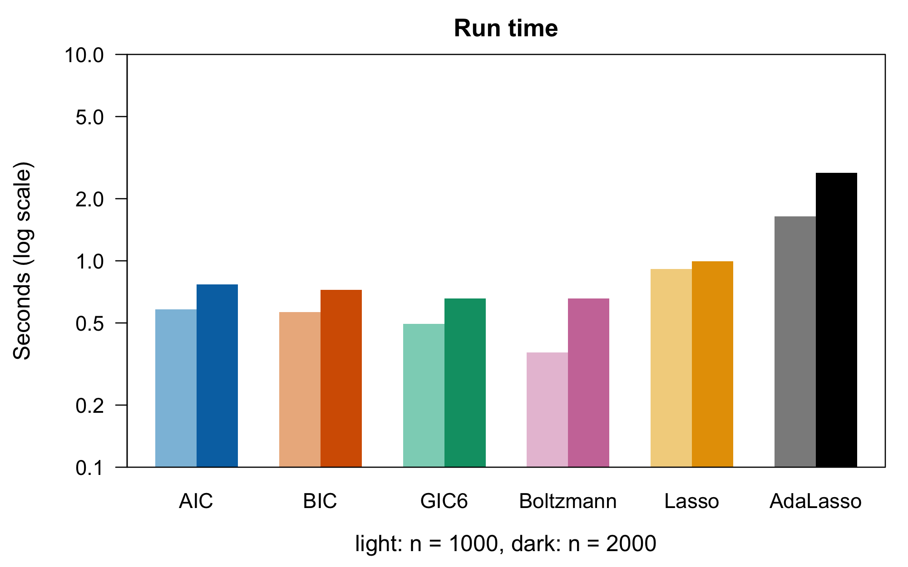
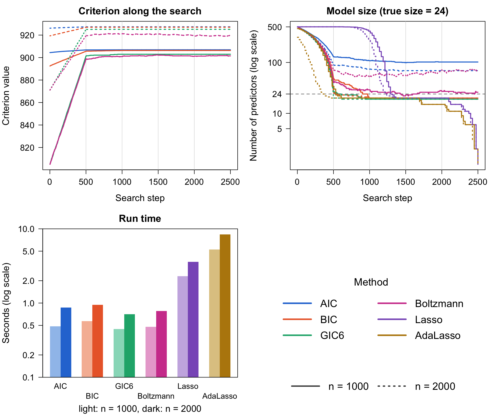
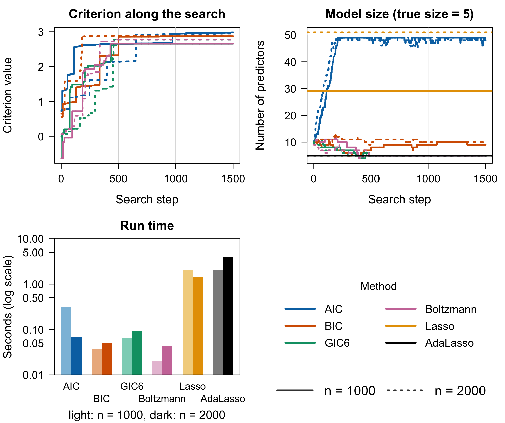
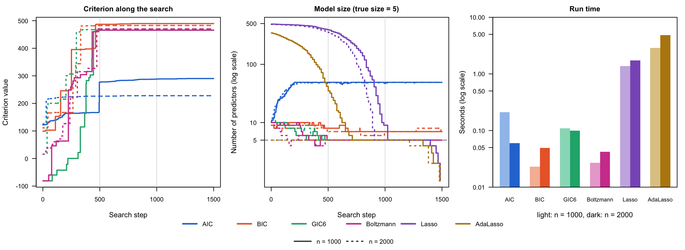
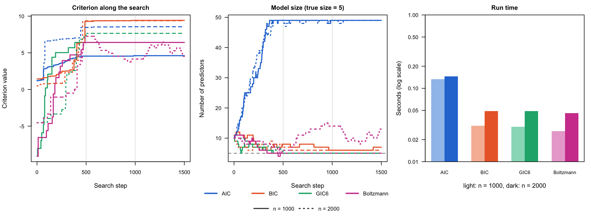
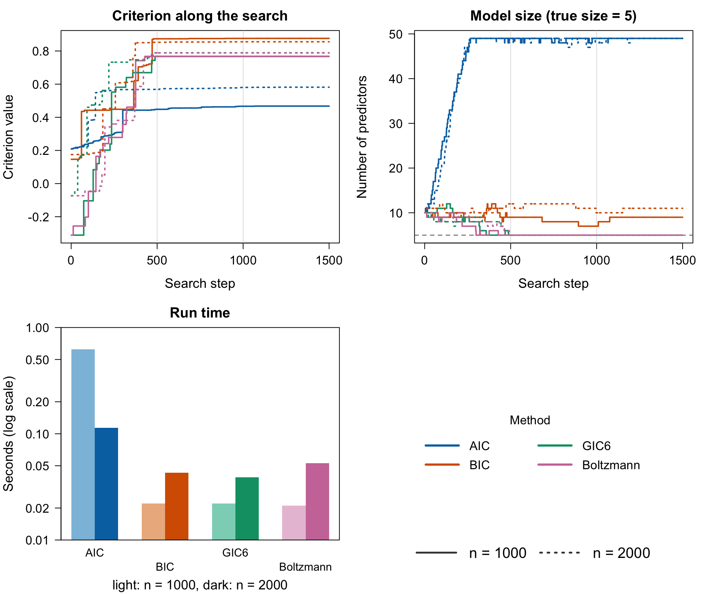

An Introduction to IChop
Yuchen Xiao
Stephen Walker
November 09, 2026
Source:vignettes/IChop.Rmd
IChop.RmdIntroduction
IChop is a package that selects variables in
high-dimensional regression by maximizing a generalized information
criterion (GIC). Finding the best subset of variables under an
penalty is a combinatorial problem, and an exhaustive search is out of
reach once there are more than a few dozen candidate predictors. The
package instead runs a Hopfield-network style coordinate search (Xiao
and Walker, 2026): it visits the candidate variables in random order,
proposes adding a variable that is out of the model or removing one that
is in it, and keeps the move when the criterion improves. The stable
states of this search are local optima of the criterion, and in practice
it finds the true model quickly when one exists.
Every criterion in the package has the form where is the hat matrix of the selected columns, the number of selected variables, the residual variance, and the penalty per variable. AIC () and BIC () are special cases; the GIC family of Kim, Kwon and Choi (2012) uses penalties that grow with the number of candidate predictors , which is what makes selection consistent in high dimensions. The package implements thirteen criteria, listed in Choosing a criterion.
The search itself runs in Julia, which R calls through the
JuliaCall package. It never forms the
hat matrix and scores each proposed move with a rank-one update, so a
pass over thousands of predictors takes seconds (Appendix 1).
The package handles Gaussian responses, multivariate Gaussian
responses (several outcomes sharing the same predictors), and
generalized linear models through a transformation to the
linear-predictor scale. This vignette works through each case in turn,
and Appendix 2
compares the search with the lasso and adaptive lasso from
glmnet on larger simulations.
The same methods are available as a Julia package, IChop.jl.
Installation
Install the development version from GitHub:
devtools::install_github("yuchenxiao95/IChop")The search needs Julia (≥ 1.9), which you can download from https://julialang.org/downloads/. Then connect R to
Julia; the first time, also install the Julia packages that
IChop uses:
library(IChop)
setup_julia() # or setup_julia("/path/to/julia/bin")
install_julia_packages() # first time onlyThe first call in a session also compiles the Julia code, which adds a few seconds once.
Quick Start
This section gives a quick overview of the package. We simulate a
sparse linear model with
observations and
candidate predictors, of which the first three are active. The
simulation and the random visiting order of the search both use Julia’s
random number generator, which set.seed() does not control,
so we seed both:
set_seeds <- function(seed) {
set.seed(seed)
JuliaCall::julia_command(sprintf("import Random; Random.seed!(%d);", seed))
}
set_seeds(123)
n <- 300; p <- 30
X <- matrix(rnorm(n * p), n, p)
beta <- c(2, -1.5, 1, rep(0, p - 3))
Y <- LP_to_Y(X, beta, family = "Normal")We run the search with EBIC, starting from the first five variables:
fit <- GICSelection(
X, Y,
Initial_Column = 1:5,
Calculate_GIC = "Calculate_EBIC",
Calculate_GIC_short = "Calculate_EBIC_short",
k = 15, # skip models with 15 or more variables
Nsim = 3 # passes over the variables
)Calculate_GIC names the criterion.
Calculate_GIC_short must name the matching
_short function; it is kept for backward compatibility and
the search does not use it.
fit records the state of the search after each of its
Nsim * p = 90 steps:
str(fit, max.level = 1, vec.len = 3)
#> List of 3
#> $ GIC_values : num [1:90] 6.82 6.82 6.82 6.82 ...
#> $ selected_coeffs:List of 90
#> $ elapsed : num [1:90] 0.0404 0.0404 0.0404 0.0404 ...GIC_values is the criterion value,
selected_coeffs the selected variables, and
elapsed the time in seconds since the search started. The
last element of selected_coeffs is the selected model, and
here it is exactly the true one:
plot(fit$GIC_values, type = "l") shows the search
converging. Finally, Beta_estimate() fits the selected
model, with the intercept first:
round(Beta_estimate(X[, selected, drop = FALSE], Y, family = "Normal"), 3)
#> [1] -0.057 2.044 -1.424 0.995Linear Regression: family = "Normal"
The Gaussian linear model is the default case. The response is a
numeric vector, and GICSelection() uses it directly. This
section covers the choice of criterion, the arguments of the search, and
the Boltzmann variant of the search. We keep using X and
Y from the Quick Start.
Choosing a criterion
The criteria differ only in the penalty :
| Function | Criterion | Penalty | Reference |
|---|---|---|---|
Calculate_AIC |
AIC | Akaike (1974) | |
Calculate_BIC |
BIC | Schwarz (1978) | |
Calculate_CAIC |
Consistent AIC | Bozdogan (1987) | |
Calculate_CAICF |
Consistent AIC with Fisher information | Bozdogan (1987) | |
Calculate_SIC |
Square-root IC | Shao (1997) | |
Calculate_GIC2 |
GIC | Kim, Kwon and Choi (2012) | |
Calculate_GIC3 |
GIC | Kim, Kwon and Choi (2012) | |
Calculate_GIC4 |
GIC | Kim, Kwon and Choi (2012) | |
Calculate_GIC5 |
GIC | Kim, Kwon and Choi (2012) | |
Calculate_GIC6 |
GIC | Kim, Kwon and Choi (2012) | |
Calculate_EBIC |
Extended BIC | , by default | Chen and Chen (2008) |
Here
is the number of candidate variables and
the selected columns; CAICF supports vector responses only. Two criteria
use slightly different forms (see ?information_criteria):
Calculate_AICc, the small-sample corrected AIC (Hurvich and
Tsai, 1989), and Calculate_AttIC, an attention-weighted
criterion specific to this package.
AIC is minimax-rate optimal for prediction but is not consistent when a true model exists: its penalty is too small to rule out spurious variables. The criteria with larger penalties are consistent. On the Quick Start data, AIC keeps four noise variables, while the others recover the true model:
criteria <- c("Calculate_AIC", "Calculate_BIC", "Calculate_SIC",
"Calculate_GIC6", "Calculate_EBIC")
sapply(criteria, function(crit) {
JuliaCall::julia_command("Random.seed!(1);")
f <- GICSelection(X, Y, 1:5, crit, paste0(crit, "_short"), k = 15, Nsim = 3)
paste(sort(f$selected_coeffs[[length(f$selected_coeffs)]]), collapse = " ")
})
#> Calculate_AIC Calculate_BIC Calculate_SIC Calculate_GIC6
#> "1 2 3 8 17 24 25" "1 2 3" "1 2 3" "1 2 3"
#> Calculate_EBIC
#> "1 2 3" Each criterion can also score a single model directly. For example,
Calculate_EBIC(Y, X[, 1:3]) returns a list with
CriterionValue, the value of EBIC for the model with the
first three variables, and InverseMatrix,
.
Commonly used function arguments
GICSelection() has a small number of arguments, and most
problems need only the following:
Initial_Column: the variables in the starting model. Starting from all variables (1:p) works well when is small relative to ; for larger , start from a handful of variables.k: the model-size cap. A move that would give a model withkor more variables is skipped, and models never exceed variables, so the selected model has at mostmin(k, n) - 1variables. Setkwell above the model size you expect.Nsim: the number of passes over the variables, each in a new random order. The search usually settles within two or three passes; more passes cost little because a pass that changes nothing is cheap.gamma: the EBIC tuning constant (default 0.6). Larger values penalize large models more. Other criteria ignore it.
Boltzmann search
The coordinate search is greedy: it only accepts moves that increase
the criterion, so it stops at the first local optimum it reaches.
GICSelectionBoltzmann() runs the same search but also
accepts a move that lowers the criterion by
,
with probability
,
so it can leave a local optimum. The temperature
controls how often this happens.
The size of a typical change in the criterion depends on the data and the criterion, so the right differs between problems. On the Quick Start data, the default is far too permissive, and the search ends with eleven variables; recovers the true model:
set_seeds(123)
fb <- GICSelectionBoltzmann(X, Y, 1:5, "Calculate_EBIC", "Calculate_EBIC_short",
T = 0.1, Nsim = 3, k = 15)
sort(fb$GIC_coeff[[length(fb$GIC_coeff)]])
#> [1] 1 2 3 4 7 13 14 16 17 20 29
set_seeds(123)
fb <- GICSelectionBoltzmann(X, Y, 1:5, "Calculate_EBIC", "Calculate_EBIC_short",
T = 0.001, Nsim = 3, k = 15)
sort(fb$GIC_coeff[[length(fb$GIC_coeff)]])
#> [1] 1 2 3GICSelectionBoltzmann() returns the criterion values in
GIC_list and the selected variables after each step in
GIC_coeff.
Multivariate Regression:
family = "MultivariateNormal"
When several responses share the same predictors, pass them as an matrix. The criterion is then the trace of a matrix, and a variable is selected if it improves the fit for the responses jointly. Here three responses depend on five of the predictors, with each response using a different subset:
set_seeds(1)
B <- matrix(0, p, 3)
B[1:3, 1] <- 1
B[c(2, 4), 2] <- -1
B[5, 3] <- 1.5
Y_multi <- LP_to_Y(X, B, family = "MultivariateNormal", cov_matrix = diag(3))
dim(Y_multi)
#> [1] 300 3
fit_multi <- GICSelection(X, Y_multi, 1:5, "Calculate_EBIC", "Calculate_EBIC_short",
k = 15, Nsim = 3)
selected <- sort(fit_multi$selected_coeffs[[length(fit_multi$selected_coeffs)]])
selected
#> [1] 1 2 3 4 5The search selects the union of the active variables.
Beta_estimate() then returns one column of coefficients per
response, with the intercept in the first row:
round(Beta_estimate(X[, selected, drop = FALSE], Y_multi,
family = "MultivariateNormal"), 2)
#> [,1] [,2] [,3]
#> [1,] 0.02 0.03 0.03
#> [2,] 1.09 -0.05 -0.04
#> [3,] 1.02 -0.99 -0.14
#> [4,] 1.07 0.04 0.04
#> [5,] 0.02 -0.97 -0.03
#> [6,] 0.13 0.00 1.56Poisson Regression: family = "Poisson"
For a non-Gaussian response, the search works on the linear-predictor
scale. Y_to_LP() maps the response to that scale with the
family’s link, the search selects the variables, and
Beta_estimate() fits the GLM on the selected variables. We
simulate counts with three active predictors:
beta_glm <- c(1, -1, 0.5, rep(0, p - 3))
set_seeds(2)
y_pois <- LP_to_Y(X, beta_glm, family = "Poisson")
head(y_pois)
#> [1] 1 0 13 0 2 2
fit_pois <- GICSelection(X, Y_to_LP(y_pois, family = "Poisson"), 1:5,
"Calculate_EBIC", "Calculate_EBIC_short", k = 15, Nsim = 3)
selected <- sort(fit_pois$selected_coeffs[[length(fit_pois$selected_coeffs)]])
selected
#> [1] 1 2 3Beta_estimate() fits the Poisson model with the log link
on the original counts, not on the transformed response:
round(Beta_estimate(X[, selected, drop = FALSE], y_pois, family = "Poisson"), 3)
#> [1] 0.039 0.980 -0.968 0.559Logistic Regression: family = "Bernoulli" and
family = "Binomial"
Binary responses use family = "Bernoulli" and the logit
link:
set_seeds(3)
y_bern <- LP_to_Y(X, beta_glm, family = "Bernoulli")
table(y_bern)
#> y_bern
#> 0 1
#> 135 165
fit_bern <- GICSelection(X, Y_to_LP(y_bern, family = "Bernoulli"), 1:5,
"Calculate_EBIC", "Calculate_EBIC_short", k = 15, Nsim = 3)
selected <- sort(fit_bern$selected_coeffs[[length(fit_bern$selected_coeffs)]])
selected
#> [1] 1 2 3
round(Beta_estimate(X[, selected, drop = FALSE], y_bern, family = "Bernoulli"), 3)
#> [1] 0.282 1.027 -0.914 0.629For counts out of a fixed number of trials, use
family = "Binomial" and pass the number of trials as
n_trials to all three functions:
set_seeds(4)
y_binom <- LP_to_Y(X, beta_glm, family = "Binomial", n_trials = 10)
head(y_binom)
#> [1] 8 5 10 5 9 6
fit_binom <- GICSelection(X, Y_to_LP(y_binom, family = "Binomial", n_trials = 10), 1:5,
"Calculate_EBIC", "Calculate_EBIC_short", k = 15, Nsim = 3)
selected <- sort(fit_binom$selected_coeffs[[length(fit_binom$selected_coeffs)]])
selected
#> [1] 1 2 3
round(Beta_estimate(X[, selected, drop = FALSE], y_binom, family = "Binomial",
n_trials = 10), 3)
#> [1] -0.009 1.126 -1.010 0.607Multinomial Regression: family = "Multinomial"
For a categorical response with
categories, the coefficients form a
matrix, with the last category as the baseline. Y_to_LP()
returns an
matrix, and the search treats it as a multivariate response, so a
variable is selected if it matters for any category:
set_seeds(5)
B_mn <- matrix(0, p, 2)
B_mn[1:3, 1] <- 1.5
B_mn[1:3, 2] <- c(-1.5, 1.5, -1.5)
y_mn <- LP_to_Y(X, B_mn, family = "Multinomial", n_categories = 3)
table(y_mn)
#> y_mn
#> 1 2 3
#> 120 121 59
lp_mn <- Y_to_LP(y_mn, family = "Multinomial", n_categories = 3)
dim(lp_mn)
#> [1] 300 2
fit_mn <- GICSelection(X, lp_mn, 1:5, "Calculate_EBIC", "Calculate_EBIC_short",
k = 15, Nsim = 3)
sort(fit_mn$selected_coeffs[[length(fit_mn$selected_coeffs)]])
#> [1] 1 2 3Other Families
LP_to_Y(), Y_to_LP() and
Beta_estimate() also support the Gamma, Exponential,
InverseGaussian, NegativeBinomial and Geometric families, with the same
three steps as the Poisson example. Family parameters are passed by
name: shape for Gamma and InverseGaussian, and
theta for NegativeBinomial. See ?LP_to_Y for
the link each family uses.
Appendix 1: How the Search Stays Fast
Every criterion in the package depends on the data only through a few quantities of the least-squares fit on the selected columns : So the hat matrix is never formed. The search keeps and for the current model and scores each proposed move with a rank-one update.
Adding a column : with , and ,
Removing column : with ,
Scoring a move costs for a model with variables, and is only updated when a move is accepted. Version 0.1.2 rebuilt for every proposal, at cost per move.
The table below gives the speed-up over version 0.1.2 (Julia search only, EBIC or SIC, Apple M-series laptop). Both versions select the same variables at every step:
| Passes | 0.1.2 | Current | Speed-up | ||
|---|---|---|---|---|---|
| 1000 | 100 | 2 | 0.18 s | 0.002 s | 91× |
| 3000 | 100 | 2 | 1.29 s | 0.005 s | 247× |
| 3000 | 100 | 2 (EBIC) | 1.61 s | 0.004 s | 371× |
| 2000 | 400 | 1 | 1.74 s | 0.046 s | 38× |
Larger problems, timed from R with GICSelection() (EBIC,
10 true predictors, start from 20 variables, k = 100,
Nsim = 3). The time includes copying X from R
to Julia, and every run recovered exactly the 10 true predictors:
| Time | ||
|---|---|---|
| 500 | 1,000 | 0.9 s |
| 1,000 | 5,000 | 7.6 s |
| 2,000 | 10,000 | 26 s |
To time your own problem:
set.seed(1)
n <- 1000; p <- 5000
X <- matrix(rnorm(n * p), n, p)
Y <- as.numeric(X[, 1:10] %*% rep(1, 10) + rnorm(n))
system.time(
fit <- GICSelection(X, Y, 1:20, "Calculate_EBIC", "Calculate_EBIC_short",
k = 100, Nsim = 3)
)Appendix 2: Comparison with Other Packages
This appendix compares the search with the lasso and the adaptive lasso on larger simulations: a high-dimensional linear model, a multivariate normal model, Poisson, binomial and multinomial GLMs, and a Cox model. Each example simulates observations on candidate predictors and compares three criteria, on the first 1000 observations and on all 2000. In increasing order of penalty per variable, the criteria are AIC (), BIC () and GIC6 (). Each example also runs the Boltzmann search with GIC6, whose temperature is a tuning parameter. The temperature used in each example is: linear , multivariate normal , Poisson , binomial , multinomial and Cox .
The lasso and the adaptive lasso are fitted with the glmnet package (Friedman, Hastie and
Tibshirani, 2010), using cv.glmnet() with 10-fold
cross-validation and lambda.min, and
family = "gaussian", "mgaussian",
"poisson" or "binomial" to match the response,
as in glmnet’s own articles. The multinomial and Cox examples leave the
lasso out: glmnet’s cross-validated fits for those families (grouped
multinomial, and Cox) take several minutes each at this size, against
well under a second for each search. The adaptive lasso uses penalty
factors
from a ridge (alpha = 0) pilot fit. Their run times are
those of glmnet’s own fitting routines.
Each table reports the size, false positives and false negatives of the selected model, and the wall-clock time of each method in seconds (Apple M-series laptop, Julia 1.11, after Julia has compiled; the search times include copying the data from R to Julia). The right-hand panel of each figure shows the same times, and the middle panel also shows the lasso paths: the number of nonzero coefficients along the grid, from the smallest on the left to the largest on the right.
Helpers
First define a few helpers. set_seeds() is the function
from the Quick Start. Run the examples in the
order shown to reproduce the output.
criteria <- c(AIC = "Calculate_AIC", BIC = "Calculate_BIC", GIC6 = "Calculate_GIC6")
sample_sizes <- c(n1000 = 1000, n2000 = 2000)
first_rows <- function(Y, n) if (is.matrix(Y)) Y[1:n, , drop = FALSE] else Y[1:n]
# Evaluate `expr` and attach its wall-clock time in seconds
timed <- function(expr) {
t0 <- proc.time()[["elapsed"]]
fit <- expr
fit$seconds <- proc.time()[["elapsed"]] - t0
fit
}
# Boltzmann search with GIC6: like GICSelection(), but a move that lowers the
# criterion is still accepted with a small probability; same output shape
fit_boltzmann <- function(X, Y, init, k, Nsim, T) {
fit <- GICSelectionBoltzmann(X, Y, init, "Calculate_GIC6", "Calculate_GIC6_short",
T = T, k = k, Nsim = Nsim)
list(GIC_values = fit$GIC_list, selected_coeffs = fit$GIC_coeff)
}
# Coefficients at lambda.min without the intercept, one column per response
lasso_coef <- function(cvfit) {
b <- coef(cvfit, s = "lambda.min")
b <- if (is.list(b)) do.call(cbind, lapply(b, as.matrix)) else as.matrix(b)
if (rownames(b)[1] == "(Intercept)") b <- b[-1, , drop = FALSE] # none for Cox
b
}
# Lasso, or adaptive lasso with ridge pilot weights, tuned by cv.glmnet()'s
# default 10-fold cross-validation (lambda.min), as in glmnet's articles
fit_lasso <- function(X, y, family, adaptive = FALSE) {
args <- list(X, y, family = family)
if (adaptive) {
ridge <- do.call(glmnet::cv.glmnet, c(args, alpha = 0))
args$penalty.factor <- 1 / sqrt(rowSums(lasso_coef(ridge)^2))
}
cvfit <- do.call(glmnet::cv.glmnet, args)
list(selected = which(rowSums(lasso_coef(cvfit) != 0) > 0),
path = cvfit$nzero) # number of predictors at each lambda
}
# For each n, run the search once per criterion on the first n observations,
# then the Boltzmann search with GIC6, and the lasso and adaptive lasso on the
# original response `lasso_y` (skipped when `lasso_family` is NULL). `T` is
# the Boltzmann temperature.
compare_criteria <- function(X, Y, init, k, Nsim,
lasso_y = Y, lasso_family = "gaussian", T = 0.1) {
lapply(sample_sizes, function(n) {
Xn <- X[1:n, ]
fits <- c(lapply(criteria, function(crit)
timed(GICSelection(Xn, first_rows(Y, n), init, crit, paste0(crit, "_short"),
k = k, Nsim = Nsim))),
list(Boltzmann = timed(fit_boltzmann(Xn, first_rows(Y, n), init, k, Nsim, T))))
if (is.null(lasso_family)) return(fits)
yn <- first_rows(lasso_y, n)
c(fits, list(Lasso = timed(fit_lasso(Xn, yn, lasso_family)),
AdaLasso = timed(fit_lasso(Xn, yn, lasso_family, adaptive = TRUE))))
})
}
last_model <- function(fit) sort(fit$selected_coeffs[[length(fit$selected_coeffs)]])
# Size, false positives, false negatives and run time of each final model
selection_table <- function(fits, truth) {
rows <- lapply(names(fits), function(n) do.call(rbind, lapply(names(fits[[n]]), function(m) {
fit <- fits[[n]][[m]]
s <- if (is.null(fit[["selected"]])) last_model(fit) else fit[["selected"]]
data.frame(size = length(s), false_pos = length(setdiff(s, truth)),
false_neg = length(setdiff(truth, s)), seconds = round(fit$seconds, 2),
row.names = paste(n, m))
})))
do.call(rbind, rows)
}Each figure shows, for every criterion, its value and the number of
selected variables after each search step: solid lines for
and dotted lines for
.
Light grey vertical lines mark a new pass over the predictors, and the
dashed line marks the true model size. Criteria with larger penalties
take lower values, so compare the shapes of the curves, not their
heights. The script data-raw/readme_figures.R in the
package source runs the code in this appendix and redraws the
figures.
All examples use the same setting. The design matrix has observations of independent standard normal predictors, so the predictor covariance is , and only a few predictors affect the response. Every search runs twice, on the first 1000 observations and on all 2000.
Linear model
Here the response is with . Five randomly chosen coefficients equal 2 and the rest are 0, and gives a signal-to-noise ratio of . Every search starts from the full model:
set_seeds(1)
n <- 2000; p <- 500
X <- matrix(rnorm(n * p), n, p)
true_cols <- sort(sample(p, 5))
beta <- numeric(p); beta[true_cols] <- 2
Y <- LP_to_Y(X, beta, family = "Normal", std = sqrt(sum(beta^2) / 0.71))
fits <- compare_criteria(X, Y, 1:p, k = p, Nsim = 5)
selection_table(fits, true_cols)
#> size false_pos false_neg seconds
#> n1000 AIC 152 147 0 0.54
#> n1000 BIC 8 3 0 0.54
#> n1000 GIC6 5 0 0 0.35
#> n1000 Boltzmann 5 0 0 0.39
#> n1000 Lasso 22 17 0 0.82
#> n1000 AdaLasso 25 20 0 1.63
#> n2000 AIC 116 111 0 0.68
#> n2000 BIC 9 4 0 0.66
#> n2000 GIC6 5 0 0 0.63
#> n2000 Boltzmann 5 0 0 0.62
#> n2000 Lasso 18 13 0 0.93
#> n2000 AdaLasso 24 19 0 2.55
Multivariate normal
Five responses, each with its own 5 predictors and coefficients from
10 down to 0.1. Pass the
response matrix as Y:
m <- 5
B <- matrix(0, p, m)
true_by_response <- vector("list", m)
for (i in 1:m) {
cols <- sort(sample(p, 5))
true_by_response[[i]] <- cols
B[cols, i] <- seq(10, 0.1, length.out = 5)
}
Y_multi <- LP_to_Y(X, B, family = "MultivariateNormal", cov_matrix = diag(m))
true_union <- sort(unique(unlist(true_by_response)))
fits <- compare_criteria(X, Y_multi, 1:p, k = p, Nsim = 5,
lasso_family = "mgaussian", T = 0.05)
selection_table(fits, true_union)
#> size false_pos false_neg seconds
#> n1000 AIC 102 80 2 0.52
#> n1000 BIC 20 0 4 0.49
#> n1000 GIC6 19 0 5 0.49
#> n1000 Boltzmann 26 7 5 0.46
#> n1000 Lasso 129 106 1 2.25
#> n1000 AdaLasso 21 2 5 5.16
#> n2000 AIC 69 45 0 0.71
#> n2000 BIC 20 0 4 0.67
#> n2000 GIC6 19 0 5 0.70
#> n2000 Boltzmann 68 47 3 0.67
#> n2000 Lasso 131 107 0 3.71
#> n2000 AdaLasso 41 17 0 8.62
Generalized linear models
The GLM examples reuse the design matrix X from above
(,
),
with 5 true predictors, and start each search from the first 10
columns.
set_seeds(2)
true_cols <- c(3, 17, 42, 88, 150)
beta <- numeric(p); beta[true_cols] <- c(1, -1, 0.8, -0.8, 0.6)
# `y` is the response, `lasso_y` and `lasso_family` its form for glmnet (NULL
# to skip the lasso), and `...` the family arguments for Y_to_LP(); `T` is the
# Boltzmann temperature
compare_glm <- function(y, lasso_y, lasso_family, ..., T = 0.1)
compare_criteria(X, Y_to_LP(y, ...), 1:10, k = 50, Nsim = 3,
lasso_y = lasso_y, lasso_family = lasso_family, T = T)Poisson regression.
y_pois <- LP_to_Y(X, beta, family = "Poisson")
fits <- compare_glm(y_pois, y_pois, "poisson", family = "Poisson", T = 0.001)
selection_table(fits, true_cols)
#> size false_pos false_neg seconds
#> n1000 AIC 48 43 0 0.40
#> n1000 BIC 9 4 0 0.06
#> n1000 GIC6 5 0 0 0.02
#> n1000 Boltzmann 5 0 0 0.09
#> n1000 Lasso 29 24 0 1.93
#> n1000 AdaLasso 5 0 0 2.14
#> n2000 AIC 49 44 0 0.08
#> n2000 BIC 10 5 0 0.06
#> n2000 GIC6 5 0 0 0.11
#> n2000 Boltzmann 5 0 0 0.04
#> n2000 Lasso 51 46 0 1.52
#> n2000 AdaLasso 5 0 0 4.19
# Coefficients of the GIC6 model for n = 2000, intercept first
round(Beta_estimate(X[, last_model(fits$n2000$GIC6)], y_pois, family = "Poisson"), 2)
#> [1] -0.03 1.00 -1.01 0.79 -0.80 0.62
Binomial counts (10 trials).
y_binom <- LP_to_Y(X, beta, family = "Binomial", n_trials = 10)
fits <- compare_glm(y_binom, cbind(10 - y_binom, y_binom), "binomial",
family = "Binomial", n_trials = 10)
selection_table(fits, true_cols)
#> size false_pos false_neg seconds
#> n1000 AIC 49 46 2 0.21
#> n1000 BIC 7 2 0 0.02
#> n1000 GIC6 5 0 0 0.11
#> n1000 Boltzmann 5 0 0 0.03
#> n1000 Lasso 29 24 0 1.38
#> n1000 AdaLasso 35 30 0 2.89
#> n2000 AIC 48 46 3 0.06
#> n2000 BIC 7 2 0 0.05
#> n2000 GIC6 5 0 0 0.10
#> n2000 Boltzmann 5 0 0 0.04
#> n2000 Lasso 39 34 0 1.72
#> n2000 AdaLasso 5 0 0 4.83
Multinomial (three categories). The coefficients form a matrix, and category 3 is the baseline:
B_mn <- matrix(0, p, 2)
B_mn[true_cols, 1] <- 1.5
B_mn[true_cols, 2] <- c(-1.5, 1.5, -1.5, 1.5, -1.5)
y_mn <- LP_to_Y(X, B_mn, family = "Multinomial", n_categories = 3)
fits <- compare_glm(y_mn, NULL, NULL, family = "Multinomial", n_categories = 3)
selection_table(fits, true_cols)
#> size false_pos false_neg seconds
#> n1000 AIC 49 47 3 0.13
#> n1000 BIC 7 2 0 0.03
#> n1000 GIC6 5 0 0 0.03
#> n1000 Boltzmann 5 0 0 0.03
#> n2000 AIC 49 45 1 0.15
#> n2000 BIC 6 1 0 0.05
#> n2000 GIC6 5 0 0 0.05
#> n2000 Boltzmann 13 8 0 0.05
Cox proportional hazards
The survival times follow a Cox model,
,
with the same
,
an exponential baseline hazard
and independent exponential censoring at rate 0.3, simulated by
LP_to_Y(family = "Cox") (Bender, Augustin and Blettner,
2005). For the searches, Y_to_LP() maps each (time,
status) pair to the deviance residual of the null Cox model (Therneau, Grambsch and
Fleming, 1990), which increases with the linear predictor. The
selected model is then fitted with survival::coxph().
y_cox <- LP_to_Y(X, beta, family = "Cox", censor_rate = 0.3)
mean(y_cox[, "status"] == 0) # share of censored observations
#> [1] 0.31
y_surv <- survival::Surv(y_cox[, "time"], y_cox[, "status"])
fits <- compare_glm(y_cox, NULL, NULL, family = "Cox", T = 0.001)
selection_table(fits, true_cols)
#> size false_pos false_neg seconds
#> n1000 AIC 49 47 3 0.66
#> n1000 BIC 9 4 0 0.03
#> n1000 GIC6 5 0 0 0.02
#> n1000 Boltzmann 5 0 0 0.02
#> n2000 AIC 49 46 2 0.12
#> n2000 BIC 11 6 0 0.04
#> n2000 GIC6 5 0 0 0.04
#> n2000 Boltzmann 5 0 0 0.05
# Coefficients of the GIC6 model for n = 2000, from survival::coxph()
round(unname(coef(survival::coxph(y_surv ~ X[, last_model(fits$n2000$GIC6)]))), 2)
#> [1] 0.97 -0.99 0.80 -0.84 0.59
GIC6 has no false positives in any example. It recovers the true model exactly in every example except the multivariate normal one, where it misses 5 of the 24 true variables. AIC and the lasso keep many noise variables in most examples. GIC6 is also faster than the lasso in every example that fits both, by a factor of about 1.5 to 100.
References
Akaike, H. (1974). A new look at the statistical model identification. IEEE Transactions on Automatic Control, 19(6), 716–723. https://doi.org/10.1109/TAC.1974.1100705
Bender, R., Augustin, T. and Blettner, M. (2005). Generating survival times to simulate Cox proportional hazards models. Statistics in Medicine, 24(11), 1713–1723. https://doi.org/10.1002/sim.2059
Bozdogan, H. (1987). Model selection and Akaike’s information criterion (AIC): The general theory and its analytical extensions. Psychometrika, 52(3), 345–370. https://doi.org/10.1007/BF02294361
Chen, J. and Chen, Z. (2008). Extended Bayesian information criteria for model selection with large model spaces. Biometrika, 95(3), 759–771. https://doi.org/10.1093/biomet/asn034
Friedman, J., Hastie, T. and Tibshirani, R. (2010). Regularization paths for generalized linear models via coordinate descent. Journal of Statistical Software, 33(1), 1–22. https://doi.org/10.18637/jss.v033.i01
Hurvich, C. M. and Tsai, C.-L. (1989). Regression and time series model selection in small samples. Biometrika, 76(2), 297–307. https://doi.org/10.1093/biomet/76.2.297
Kim, Y., Kwon, S. and Choi, H. (2012). Consistent model selection criteria on high dimensions. Journal of Machine Learning Research, 13, 1037–1057. https://jmlr.org/papers/v13/kim12a.html
Schwarz, G. (1978). Estimating the dimension of a model. The Annals of Statistics, 6(2), 461–464. https://doi.org/10.1214/aos/1176344136
Shao, J. (1997). An asymptotic theory for linear model selection. Statistica Sinica, 7(2), 221–264. https://www3.stat.sinica.edu.tw/statistica/j7n2/j7n21/j7n21.htm
Therneau, T. M., Grambsch, P. M. and Fleming, T. R. (1990). Martingale-based residuals for survival models. Biometrika, 77(1), 147–160. https://doi.org/10.1093/biomet/77.1.147
Xiao, Y. and Walker, S. (2026). Fast variable selection under regularization in high-dimensions. Statistics and Computing, 36(3), 100. https://doi.org/10.1007/s11222-026-10853-5